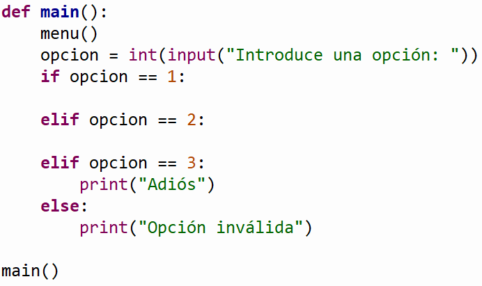

.

Descripción:
- Desarrolla, en conjunto con el
profesor, algunos problemas que implican el uso del ciclo while.

Objetivos:
- Aplicar el ciclo while en la
solución de problemas.
- Aplicar los conocimientos
sobre funciones.
- Utilizar funciones acompañadas
de la estructura "while".

Modalidad:

Instrucciones:

Ejercicios:
-
La función
serie (n) que recibe un valor entero n mayor o igual a uno y regresa
el resultado de la siguiente serie:
serie(n) = 31 - 32 + 33 - 34 + 35....
Ejemplos:
serie(2) = 31 - 32 = - 1
serie(3)
= 31 - 32 + 33 = 32
Casos de prueba:
Input:
Número de opción (1. Serie)
Input:
Valor de n (entero)
Output: Resultado de la sumatoria (entero)
|
Input:
1
Input: 2
Output:
-1
|
Input:
1
Input: 3
Output:
32
|
-
La función
aproximacion_PI (n)
que recibe el límite n de la serie para calcular la
aproximación de PI. Existen diferentes algoritmos que nos permiten
obtener una cercana aproximación al valor de la constante PI, uno
de ellos es el Algoritmo Lord Brouncker:

Casos de prueba:
Input:
Número de opción (2. Aproximación PI)
Input: Valor de n (entero)
Output: Aproximación de PI (real con cuatro decimales)
|
Input:
2
Input: 10000
Output:
3.1414
|
Input: 2
Input: 1000000
Output:
3.1416
|
-
La función menu ()
que despliegue el siguiente menú en pantalla:
1. Serie
2.
Aproximación PI
3. Salir
Casos
de prueba:
Input:
Número de opción (3. Salir)
Output:
Mensaje "Adiós"
Casos
de prueba:
Input:
Número de opción (Opción inválida)
Output:
Mensaje "Opción inválida"
|
Input: -5
Output: Opción
inválida
|
Input:
90
Output: Opción
inválida
|
-
La función
main ()
que utilice la función menu para desplegar el menú
correspondiente y de acuerdo a la opción seleccionada por el
usuario le dé la oportunidad de ejecutar cualquiera de las
funciones que han sido construidas. Utiliza el estatuto de control
if.
Recuerda que la
captura de datos debe ser realizada en la sección del main.
-
En el
script principal
manda llamar a la función main.
-
Guarda tu archivo como:
X2_Matricula.py


Recursos:
6. Funciones
7. While

Especificaciones de entrega:
- Formato de entrega: py
-
Nombre de los entregables: X2_matrícula.py
-
Medio de entrega: En la sección de Ejercicios 2: While
Instrucciones para enviar tus archivos por Canvas
|